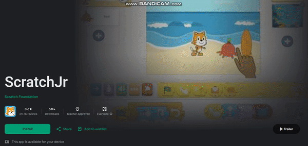
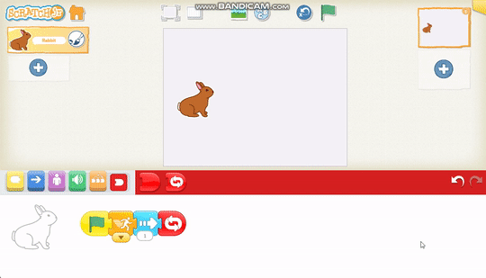

Introduction to Scratch Jr
Welcome to Scratch Jr, a simplified version of Scratch designed for younger children.
Follow these steps to get started:
-  Download and install the Scratch Jr app on your device.
- Open the app and explore the interface.
- Create your first Scratch Jr project with colorful characters and backgrounds.
- Add blocks to make characters move, dance, and interact.
Scratch Jr Interface
Here's how the Scratch Jr interface looks:
Example Scratch Jr Project
Take a look at this example Scratch Jr project:
